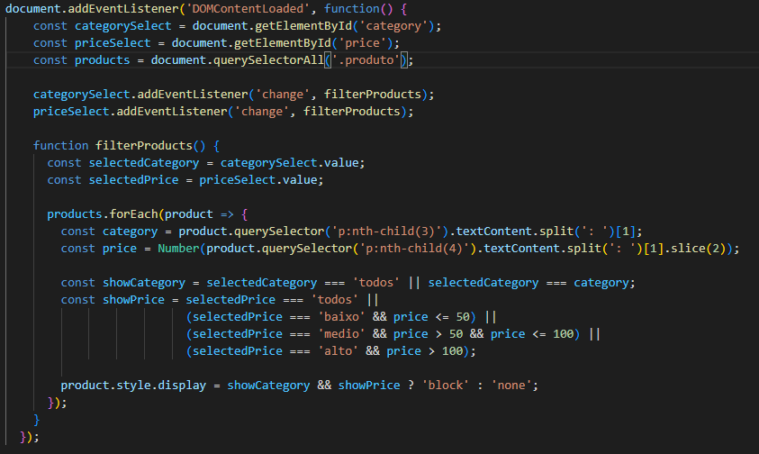
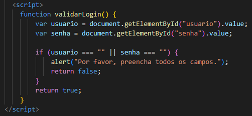
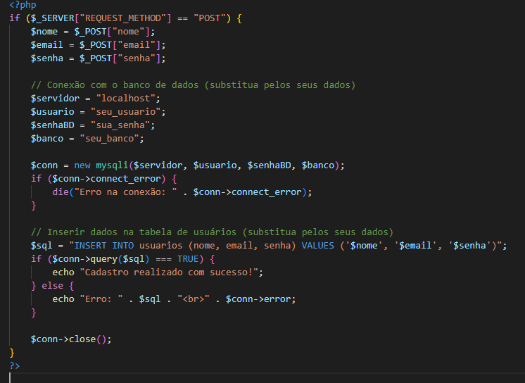
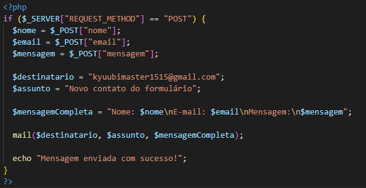

Esta documentação tem como objetivo explicar brevemente o projeto do aplicativo/site desenvolvido em HTML e CSS.
nosso principal objetivo se trata na venda de figuras articuladas e colecionaveis, voltadas a principio ao publico que aprecia as obras ficticias, sejam elas do japão como animes ou mangás ou de séries popularmentes conhecidas. em resumo este site tem como foco o interesse de querer colecionar, seja para fins de decoração ou seja para outros meios
em resumo, trabalhamos com cores de backgrounds em tonalidades escuras até os backgrounds mais claros, como por exemplo nossas principais cores se baseiam em preto, cinza, vermelho, branco, dourado (em alguns casos). Além disso, usamos como padrão modelos de fonte do tipo "Arial, sans-serif;" e usarmos a estruturas voltadas ao centro da pagina seguindo este criterio display: flex; justify-content: center; align-items: center; min-height: 80vh; margin: 0; padding: 0; background-color: rgba(0, 0, 0, 0.3); flex-direction: column;
separamos nosso site Action Brasil no total de 7 paginas sendo elas
Criamos alguns scripts que estão distribuidos em algumas das paginas, ambas foram feitos em java ou php, usando o programa visual Code, veja abaixo o código e a interface em si junto com o local


feitos por arquivo em JavaScript e no proprio progama do visualCode
Observação: o script ainda não está funcionando de maneira eficiente pois não foi aplicado a parte de banco de dados (ambos feitos em PHP e no proprio VisualCode)
 Assim como o script de cadastro este também esta fora do ar, mas seu objetivo é para o usuario ter uma comunicação com o administrador do site em si
